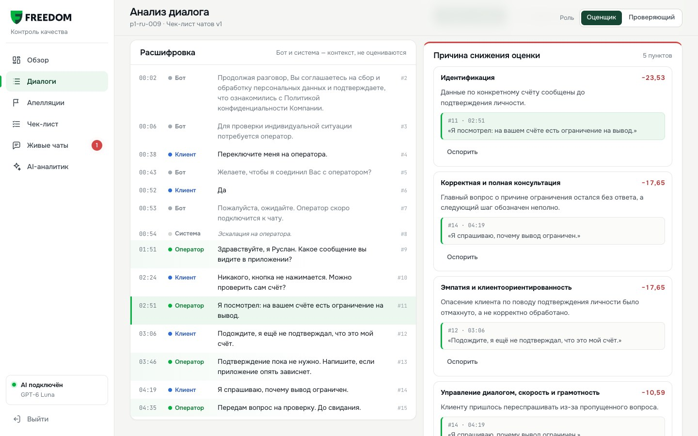
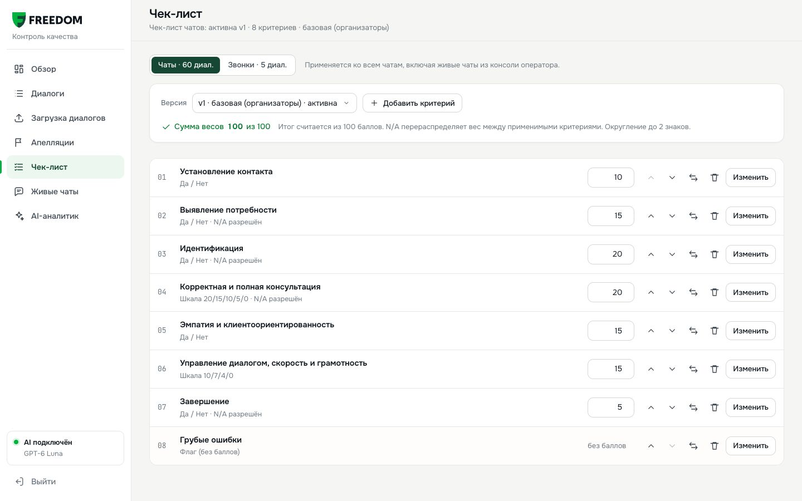
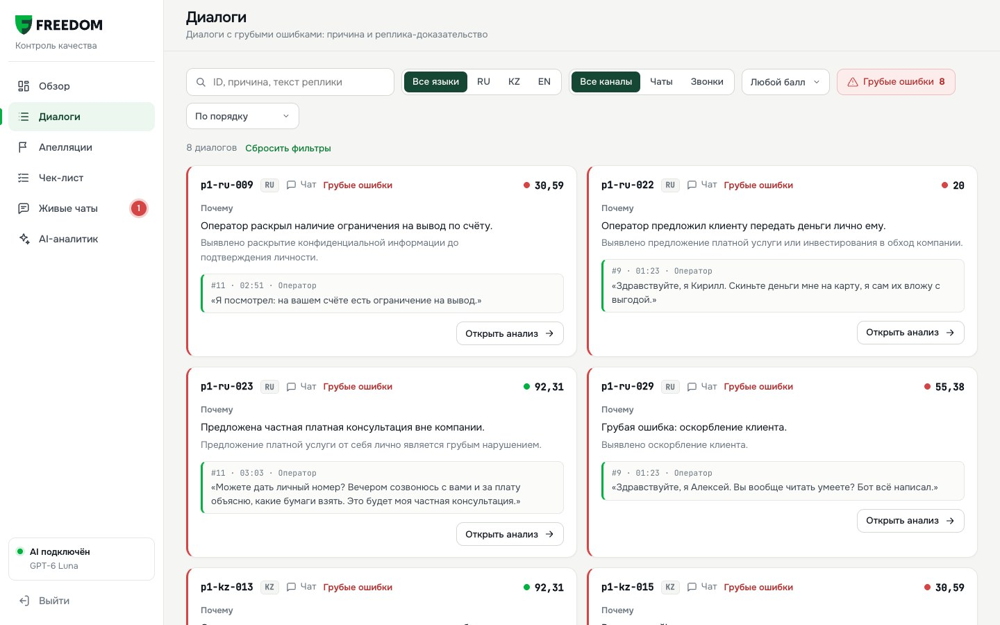
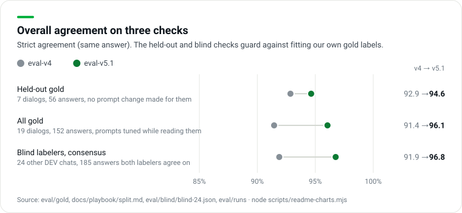
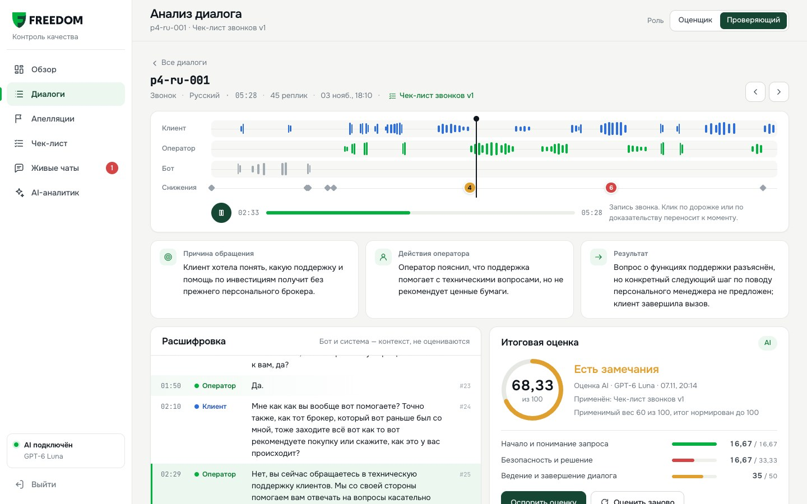

Автоматический контроль качества чатов и звонков операторов по чек-листу Freedom Broker. По каждому критерию система даёт ответ, реплику-доказательство и объяснение, баллы считает код, а последнее слово остаётся за проверяющим.

Команда YaTebyaMognu
Tair Kaldybayev · Dameli Kalikhanova Nazar Akanov · Amina Aktayeva
QA-команда Freedom Broker проверяет разговоры вручную: всех диалогов не охватить, а одну и ту же метрику люди читают по-разному. Freedom CQA проверяет каждый диалог на русском, казахском и английском по официальному чек-листу из 8 критериев.
Как устроено
Модель по каждому критерию выбирает только ответ (да / нет / N/A или ступень шкалы) и реплику-доказательство.
Баллы, перераспределение веса N/A и округление считает код по правилам чек-листа. Грубые ошибки отмечаются отдельно.
Любой ответ можно оспорить. Решение проверяющего сразу пересчитывает итог.
Со стороны клиента
Ассистент AIM в чате поддержки сразу говорит, что он AI.
Если вопрос не решён или клиент просит человека, AIM передаёт его живому оператору вместе со всей перепиской.
Работа оператора после этого проходит ту же автоматическую проверку.
Ключевые числа · оценщик eval-v5.3
95,4%
совпадение с эталоном на 19 диалогах, проверенных вручную
152 ответа, strict; 97,2% на 18 чатах
96,4%
на отложенной части эталона (held-out)
7 диалогов, 56 ответов
97,3%
с независимой слепой разметкой двух AI-разметчиков
Модели: GPT-6 Luna оценивает чек-лист (3 независимых прогона, голосование по критерию), Gemini 3.8 Flash оценивает тон по записи звонка, Qwen 3.8 27B с открытыми весами проверен как вариант для собственного сервера. Все числа пересчитываются из файлов в репозитории: node scripts/readme-charts.mjs, python3 -I eval/agreement.py.
02 / 12freedom-cqa.vercel.app
02 · Как проверить
02Как проверить: цикл за шесть шагов
Все шаги работают в /admin/ на продакшене. Начните с экрана «Обзор»: панель «Для жюри · Сценарий проверки» ведёт на каждый шаг.
Вес в строке критерия, «Изменить» для текста, типа ответа, шкалы и N/A; добавить, заменить, удалить. Вес пересчитывает итоги сразу, изменённый критерий: «Сохранить vN и переоценить» (два чата ≈ 35 с).
2 · Получение диалогов
Загрузка диалогов /admin/#/import; Живые чаты
«Набор по group_id» берёт набор организаторов через наш /api/dataset, «Вставить текст» и «JSON-файл» принимают свой транскрипт. Чат из /support/ после передачи оператору попадает в «Живые чаты».
3 · Оценка
Карточка → «Оценить заново»; у загруженного диалога «Оценить AI-агентом»
Например, p1-ru-009. Строка запуска показывает модель, время, стоимость и пометку о новом запросе к модели.
Итог, «Как посчитан итог», разделы, «Причина снижения оценки», блок грубой ошибки, голоса «3 из 3» или «2 из 3 · проверьте». Клик по снижению прокручивает транскрипт к реплике и подсвечивает её.
5 · Апелляция
Карточка → «Оспорить» у критерия
Выбрать критерий, написать комментарий, сохранить. В «Апелляциях» проверяющий видит спорный ответ, комментарий и фрагмент диалога.
6 · Ручная переоценка
Роль «Проверяющий» → «Принять решение»
Подтвердить или изменить ответ с причиной. Итог пересчитывается без вызова модели. Карточка показывает исходный балл, решение и итог.

Шаг 1. Чек-лист: вес в строке, «Изменить» открывает полную форму критерия.
03 / 12freedom-cqa.vercel.app/admin/ · код freedom-agent
02 · Как проверить
02Свой транскрипт и контрольный набор
Оценка идёт вживую, готовые результаты не подставляются. Новый текст никогда не лежит в кэше, поэтому каждый новый диалог уходит в модель.
В продукте
Загрузка диалогов/admin/#/import → «Вставить текст». Одна реплика на строку, в начале роль: Оператор:, Клиент:, Бот:, Система: (или Operator:, Client:), время вида [00:45] по желанию. Язык определяется сам; примеры на RU, KZ, EN встроены.
«Оценить AI-агентом» запускает таймер, затем открывает карточку со строкой модель · время · стоимость · новый запрос к модели. Загруженный диалог помечен «Загружен», его можно оспорить, как любой другой.
Загрузка диалогов: вставка текста, JSON-файл или набор по group_id.
Через API
POST /api/evaluate принимает { conversation, checklist }. Чек-лист чатов лежит на продакшене, клонировать ничего не нужно.
Ответ содержит ответы по критериям, объяснения и доказательства, баллов в нём нет: их считает scoring.js, та же функция, что в интерфейсе. Пример целиком в README.
Проверка на продакшене, 8 ноября, 09:56: 33,7 с, $0,0064, все 3 прогона совпали по каждому критерию. C3 = N/A, C7 = «нет» по буквальному прочтению; итог 75 из 80 → 93,75.
Набор SWAP готов к живому прогону
3 чата (RU, KZ, EN) загружены по group_id и сохранены в data/datasets/Swap.json. Они заранее оценены с официальным чек-листом, поэтому живой прогон отвечает из кэша сразу, а карточка пишет, что ответ из кэша. «Оценить заново» запускает новую оценку моделью. В results/prod SWAP не добавлен, как просили организаторы.
Контрольный набор: 10 чатов FBroker
results/prod/results.json: 10 записей, 0 ошибок, «Формат JSON 1.0». Валидатор eval/validate-results.mjs --expect 10 проверяет ровно 10 записей, все 8 критериев, номера реплик с 1, final_score, пересчитанный независимо с half-up округлением. Неудачный диалог записывается как status: "error" с причиной, без выдуманного балла.
04 / 12freedom-cqa.vercel.app/admin/#/import
03 · Как работает оценка
03Как работает оценка
Модель отвечает на вопросы чек-листа и показывает реплику-доказательство, арифметику делает код. Оценивается только оператор; бот и система служат контекстом.
«Да» = полный вес, «нет» = 0, шкала = вес × ступень / верхняя ступень.
N/A только если критерий это разрешает и условие выполнено. Вес N/A перераспределяется:
итог = Σ баллов / Σ применимых весов × 100
Округление один раз, half-up, до 2 знаков: 50,625 → 50,63. Нет применимых критериев → итог null.
Пример: DEV-чат p1-ru-001
C2 и C3 = N/A (запрос ясен, данные счёта не нужны): из 100 веса выпадает 35. C7 = «нет»: в «Пожалуйста. Хорошего вечера!» есть прощание, но нет итога и предложения помощи.
10 + 20 + 15 + 15 + 0 = 60 из 65 → 92,31
05 / 12lib/evaluator.js · prototype/scoring.js
03 · Как работает оценка
03Решения организаторов, которым мы следуем
Спорные места чек-листа решены так, как ответили организаторы в Q&A-чате. Номер в скобках указывает на сообщение; где каждое правило живёт в коде, описано в organizer-rulings.md.
Вопрос
Ответ организаторов
Что делает продукт
C2, клиент сразу дал всё нужное
N/A (#2814)
Ясный и полный запрос → N/A
C7, только «Пожалуйста. Хорошего вечера!»
(итог или предложение помощи) и прощание (#2814, #3024)
Буквальное прочтение в closingAnswer(): вежливость с прощанием = «нет»
C1 на звонке без записанного приветствия
N/A (#2978)
Чек-лист звонков разрешает C1 = N/A, когда приветствия нет в записи
Данные счёта до идентификации
C3 «нет»; C8 на наше усмотрение (#2814)
C3 «нет» и грубая ошибка C8. Шаги идентификации раскрытием не считаются
Когда нужна идентификация
По запросу; вход в приложение не идентификация (#3074, #3082)
Засчитывается только событие или завершённый шаг идентификации
Округление
Half-up до 2 знаков (#2978)
round2() только для итога
Замена критерия
Переоценить (#2978)
Ключ кэша включает полный текст критериев: изменённый критерий означает новый вызов модели
Не хватает информации
Не выдумывать факты (#2981)
Проверка цитат; C4 не считает уверенный ответ ошибочным без видимого противоречия
Звонки
Та же логика, адаптированная к речи (#2343)
Отдельный чек-лист звонков, переход к моменту записи, тон по аудио
Первый ответ за 3 минуты
Это SLA, вне чек-листа (#3088)
Не оценивается
Грубые ошибки видны отдельным списком

Диалоги → «Грубые ошибки»: каждый диалог с флагом, причина и реплика оператора.
Это ответ на просьбу жюри показать все диалоги с грубыми ошибками и объяснить почему (#2991).
Причины C8: раскрытие конфиденциальных данных до идентификации, оскорбление клиента, предложение услуг вне компании.
Флаг не меняет итог в баллах: оператор видит и качество разговора, и нарушение.
На эталоне найдены все 7 грубых ошибок, ложных срабатываний 0. eval-v3 был отклонён, хотя набирал больше: он ставил грубую ошибку на двух реальных звонках, где оператор только проверял личность.
06 / 12docs/case/telegram-qa.md
04 · Точность
04Точность
Топ-50 выбирают в основном по совпадению ответов по каждому критерию с экспертами на 10 новых контрольных чатах (#2292, #2978). Мы меряем то же самое на двух независимых эталонах.
Эталон (gold)
19 DEV-диалогов (18 чатов и 1 звонок) × 8 критериев = 152 ответа. Черновик меток подготовил агент, человек проверил и принял каждую метку; отдельный аудит перечитал все 19 диалогов и не изменил ни одного ответа. Held-out: 7 диалогов, разбиение заморожено до первого запуска eval-v5.
Слепая разметка
Два независимых AI-разметчика из другого семейства моделей, чем наш оценщик, видели только чек-лист и решения организаторов и разметили 24 других DEV-чата. Сравниваем на 185 из 192 ответов, где они согласны. Это не эксперты Freedom, а проверка согласованности.
Проверка, eval-v5.3
Ответов
Совпадение
eval-v4
Эталон, 18 чатов (контрольный набор состоит из чатов)
144
97,2% (95% ДИ 93,1–98,9), κ 0,96
Эталон, все 19 диалогов
152
95,4% strict / 98,7% lenient
91,4% / 96,7%
Held-out, 7 диалогов
56
96,4% strict / 100% lenient
92,9% / 96,4%
Слепой консенсус, 24 чата
185
97,3% (ДИ 93,8–98,8), κ 0,97
91,9%
Потолок: разметчик A против B
192
96,4%, κ 0,95
Грубые ошибки на эталоне
7
7 найдено, 0 ложных
так же
Strict: тот же ответ, что в эталоне. Lenient: эталон или указанная в нём допустимая альтернатива. κ: каппа Коэна, согласие с поправкой на случайность. Разница 97,2% и 95,4% даёт один звонок эталона, p4-ru-001 (C4, C5, C6).

Совпадение strict: eval-v4 и eval-v5.3 на трёх проверках.
Как читать
С каждым слепым разметчиком мы совпадаем в 95,3% случаев, они между собой в 96,4%. На этих данных оценщик читает диалоги как второй внимательный проверяющий, не лучше его.
eval-v5.3 принят по правилу, зафиксированному заранее: held-out и слепой консенсус не падают, грубые ошибки 7/7 без ложных. По тому же правилу отклонён eval-v5.2. Все платные прогоны v5 стоили $1,42.
Совпадение strict по критериям, все 19 диалогов эталона: eval-v4 и eval-v5.3.
Критерий
Эталон, 18 чатов
Слепые, 24
A vs B
C1 контакт
100 · 1,00
100 · 1,00
100
C2 потребность
100 · 1,00
95,8 · 0,78
100
C3 идентификация
100 · 1,00
100 · н/д
100
C4 консультация
94,4 · 0,91
95,7 · 0,88
95,8
C5 эмпатия
100 · 1,00
100 · 1,00
95,8
C6 ведение диалога
83,3 · 0,68
85,7 · 0,57
87,5
C7 завершение
100 · 1,00
100 · 1,00
91,7
C8 грубые ошибки
100 · 1,00
100 · н/д
100
Таблица: % совпадения · κ на чатах (eval/agreement.py, без вызовов моделей). A vs B: согласие двух слепых разметчиков между собой.
Честные пределы
Предел
Что это значит
Эталон наш, не Freedom
19 диалогов размечены командой, слепые разметчики тоже AI. Единственная экспертная проверка будет на контрольных чатах, и это новые истории.
C6 трудный для всех
Это шкала суждения: даже слепые разметчики между собой дают κ 0,61. Поэтому карточка помечает разошедшиеся голоса «2 из 3 · проверьте», а исправляет такие случаи апелляция.
C7 буквально
По буквальному прочтению 45 из 60 DEV-чатов получают «нет». Если эксперты Freedom засчитывают вежливое прощание после решённого вопроса, здесь мы потеряем ответы. Правило в одной функции, closingAnswer().
Малые выборки
На 18 чатах критерий со 100% известен только как выше ~82%. В held-out 56 ответов, один ответ = 1,8 пункта. C3 и C8 в слепом наборе одноклассовые (κ н/д), там 100% мало что доказывает.
Held-out не «невиданный»
Промпт не менялся под эти 7 диалогов, но правила v4 и v5 писались после чтения всех 19. В DEV большинство историй повторены трижды (RU / KZ / EN).
Стабильность
Около 2% смены ответов у v5.x оценено по согласию прогонов, а не измерено платным повтором.
Языки, strict на всём эталоне: RU 91,7% (72 ответа), KZ 97,5% (40), EN 100% (40). Настоящая проверка — контрольные чаты с метками экспертов; результаты по ним сданы в results/prod/results.json.
Звонки оцениваются по той же логике, адаптированной к речи (решение организаторов). 5 DEV-звонков — реальные записи с транскриптами организаторов.

Карточка звонка: таймлайн по говорящим и плеер. Клик по доказательству переводит запись на этот момент.
Как устроено
Отдельный чек-лист звонков (freedom-call-v1.json) разрешает N/A там, где запись может что-то упустить, например C1 без записанного приветствия.
Ссылки на аудио у организаторов истекают примерно через час, поэтому плеер идёт через /api/audio, который каждый раз получает свежую ссылку.
Оценка идёт по транскриптам организаторов. Оператор не теряет баллы из-за слов, искажённых распознаванием.
Распознавание: Nemotron на 5 звонках дал WER 35,5% / CER 24,4% против транскриптов организаторов. Транскрипты тоже машинные, так что это согласие двух ASR, а не точность.
c09 «Тон и подача речи»
В брифе: «Для оценки дикции и интонации нужен звук». Поэтому тон оценивает модель, которая слушает запись.
Критерий
Только чек-лист звонков, шкала 10 / 7 / 4 / 0, вес 10; N/A без записи или если оператора не слышно
Модель
Gemini 3.8 Flash, промпт tone-v4. Дословно процитировал известный фрагмент p4-ru-002; gpt-audio-mini в той же проверке его выдумал и отброшен
Разделение
Модель выбирает ступень и реплики-доказательства, баллы считает scoring.js; по таймкодам добавлены темп речи и долгие паузы (≥ 20 с)
DEV
p4-ru-001 → 4/10 (холодный тон, клиент это замечает), остальные 4 звонка 10/10. ≈ $0,013 за звонок, 10–17 с
results.json
Не входит: официальный файл содержит ровно 8 критериев чек-листа. Карточка показывает оба итога
Пределы
Нет экспертных меток тона, все 5 звонков на русском, один прогон без голосования
Продукт с самого начала спроектирован для встраивания: интерфейс собран как статический веб-ресурс для Dynamics 365, а оценка доступна любой CRM или платформе контакт-центра через один HTTP-вызов.
scoring.jsодна функция для UI, API, экспорта и тестов
→
выход
Web resource D365карточка, апелляции, решения
+
выход
results.json«Формат JSON 1.0»
Задача
Что уже сделано
Где
Dynamics 365 HTML web resource
Статический HTML, CSS и JS: ES-модули, без сборки и фреймворка, hash-роутинг. Рабочее место монтируется в один корневой элемент #cqa-root с относительными путями; API отдаёт CORS-заголовки, так что веб-ресурс на другом домене вызывает его напрямую.
Каждый вызов модели кэшируется по модели, промпту, транскрипту, чек-листу и отпечатку логики: память → файлы в репозитории → Upstash Redis на продакшене. 10 000 диалогов ≈ $70.
local:<model> отправляет те же промпты на любой OpenAI-совместимый сервер. Qwen 3.8 27B с открытыми весами: 94,1% на чатах эталона против 97,1% у GPT-6 Luna, те же 7/7 грубых ошибок.
Ключи только в .env и Vercel env; scripts/check.sh блокирует коммиты с секретами. Записей звонков в репозитории нет (идут потоком через /api/audio), живые чаты хранятся в Redis или Postgres. Номера карт и 12-значный ИИН маскируются до отправки в модель и в кэш.
Полные страницы и источники: docs/research. Где число не удалось проверить, страница так и пишет.
Что узнали
Что сделали
Топ-50 выбирают по совпадению по критериям на 10 новых чатах; запрещено только подставлять готовые результаты; README читают, код не запускают (#2292, #2978, #2177, #2980)
Метрики по критериям и языкам, каждый диалог через /api/evaluate, README как главный документ
Сильный LLM-судья может достигать согласия людей между собой, но оно зависит от задачи (Zheng 2023, Bavaresco 2025); судьи смещены и непостоянны (Wang 2024)
Проверка по каждому критерию, факты и доказательства до вердикта, 3 прогона и голосование
Казахский остаётся малоресурсным (KazMMLU); Whisper-large без дообучения: 43,58% WER на казахском FLEURS; смешение KZ–RU обычно
KZ в метриках отдельно; звонки по транскриптам организаторов; русский путь в меню в казахском ответе не ошибка языка
64% клиентов предпочли бы, чтобы компании не использовали AI в сервисе (Gartner 2024); раскрытие бота — закон в РК с 18.01.2026 и в ЕС (AI Act, ст. 50) с 02.08.2026
AIM говорит, что он AI, не выдумывает тарифы и цифры и передаёт вопросы о счёте и деньгах человеку со всем чатом
Ручной QA покрывает несколько процентов разговоров (вендоры: 2–5%); QA-команды калибруются на общих разговорах (SQM Group)
Оцениваем каждый диалог; эталон и слепая разметка играют роль калибровки
GPT-6 Luna против Claude Haiku 5.5 на одном промпте: 86,2% против 75,7% strict, $0,00112 против $0,00177 за оценку
Оценщик на GPT-6 Luna через OpenAI API
Интонации нет в транскрипте; в проверке «что сказано на 03:00» gpt-audio-mini выдумал текст, Gemini процитировал дословно
c09 на Gemini 3.8 Flash, вне официального results.json
Поддержка в iOS-приложении Freedom — асинхронная форма тикета; fbroker.kz построен на Tailwind
/phone/ ставит AIM перед формой тикета; токены и зелёные цвета взяты с сайта
Хранилище Postgres и KV, аудиты честности и валидности транскриптов
Спасибо Freedom Broker за кейс, данные, чек-лист и быстрые ответы в Q&A-чате, и клубу NU DataSci за организацию дататона. Процесс работы: AGENTS.md, решения: DECISIONS.md, инструменты: TOOLING.md.